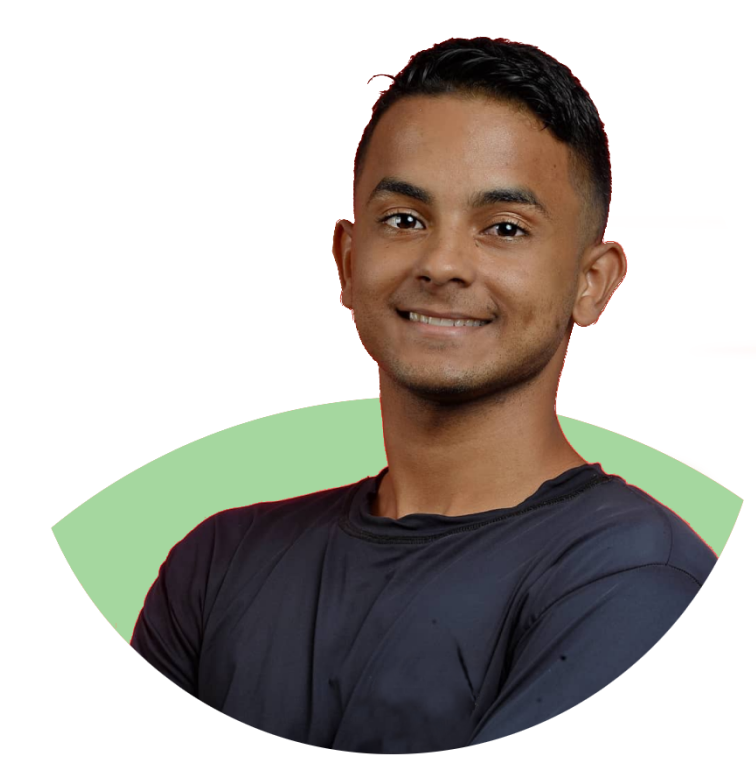

O nosso projeto tem o propósito de incentivar as pessoas a olhar para a natureza de outras formas!

Protejam a Natureza
As árvores são o maior patrimônio ambiental que existe nas cidades, pois elas abrigam os pássaros, que espalham as sementes e comem os insetos.
A cachoeira forma-se em um rio quando há um desnível brusco no leito fluvial, causando uma grande queda de volume de água.
Os animais estão adaptados ao ambiente em que vivem, pela forma do corpo, pela maneira como se deslocam, pela alimentação e pelos lugares onde se abrigam.